Netlify公式サイトにアクセス
ブラウザで https://www.netlify.com を開きます。 右上の 「Sign up」 ボタン、もしくは中央の 「Start building」 をクリックして登録に進みましょう。
ヒント
どちらのボタンを押しても、同じサインアップ画面に進めます。
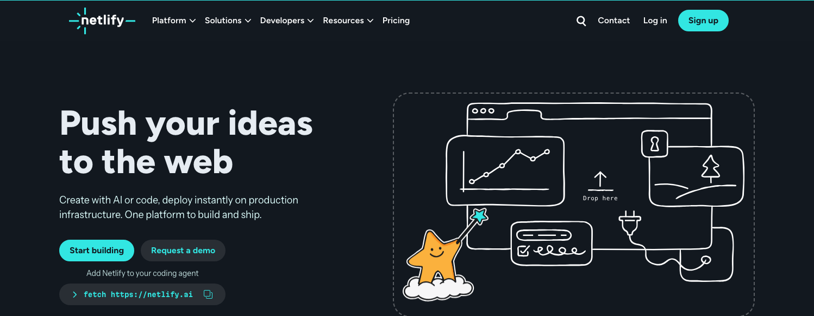
Netlify公式サイトにアクセスし、サインアップから氏名登録までを行います。
ブラウザで https://www.netlify.com を開きます。 右上の 「Sign up」 ボタン、もしくは中央の 「Start building」 をクリックして登録に進みましょう。
どちらのボタンを押しても、同じサインアップ画面に進めます。

「The launch center for …」 の画面が表示されます（「…」の部分は first-time builders / internal teams などが数秒ごとに入れ替わります）。 利用するアカウントを選んで進みましょう。
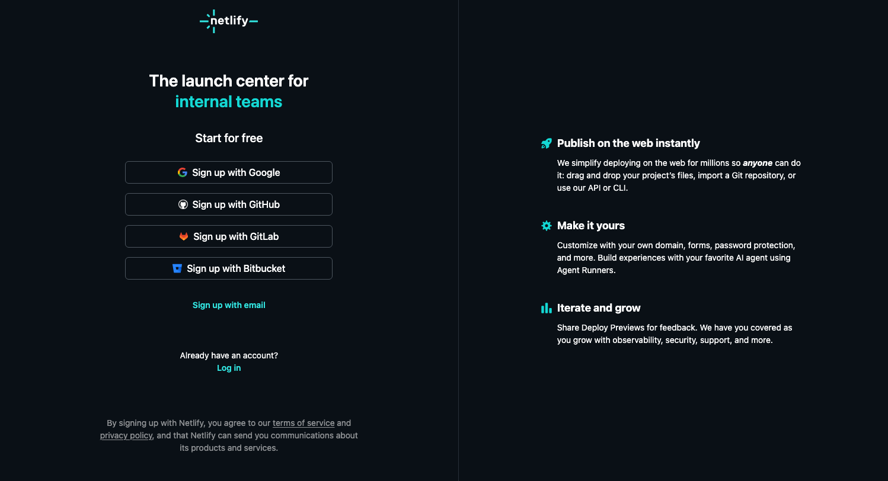
「Nice to meet you! Let's get acquainted.」 の画面で、First name(名)と Last name(姓)を入力します。 ここから複数の質問にステップ形式で答えていきます。
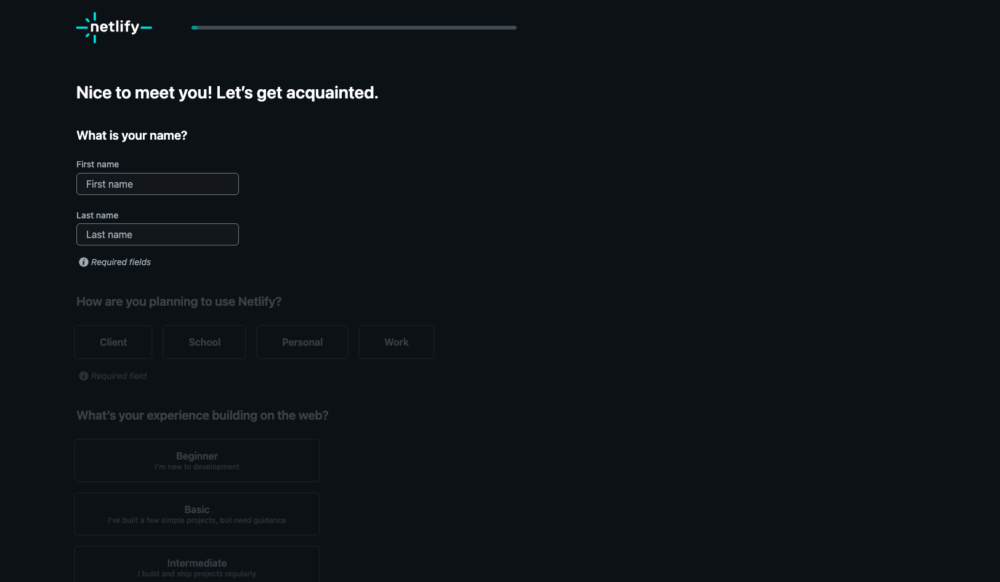
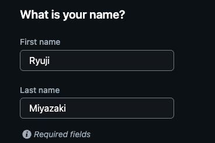
First name: Ryuji / Last name: Miyazaki のようにローマ字で入力するとシンプルです。
Netlifyからの簡単な質問に答えていきます。回答内容に応じて、最適な案内が用意されます。
この章の画面は 2026年5月に撮影したものです。Netlify はこの質問を予告なく入れ替えるので、順番や文言が違っていても大丈夫。いちばん近いものを選んで進めば、最後に「Deploy your first project」の画面に着きます。
「How are you planning to use Netlify?」(どのように利用しますか?) の質問に答えます。
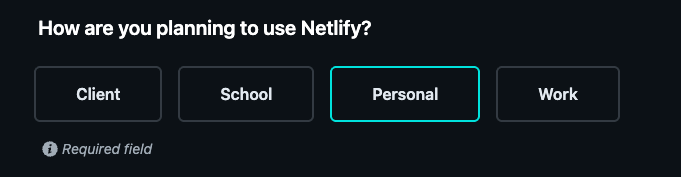
「What's your experience building on the web?」(Web開発の経験はどのくらいですか?) に回答します。 4段階から正直に選びましょう。
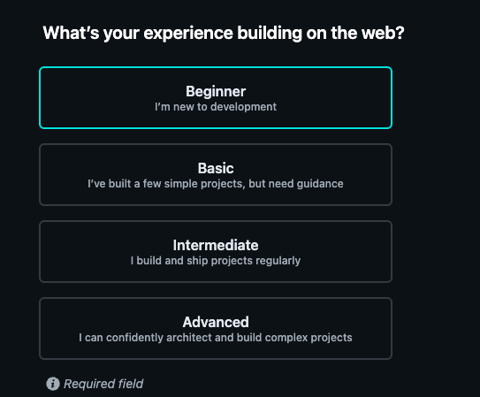
「What kind of project do you want to build first?」(最初に何を作りますか?) を選びます。 ポートフォリオなら Personal project がおすすめです。
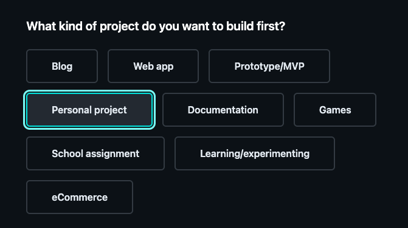
「What best describes your role?」(あなたの役割は?) で、最も近いものを選択します。
該当しない場合は Other でOKです。
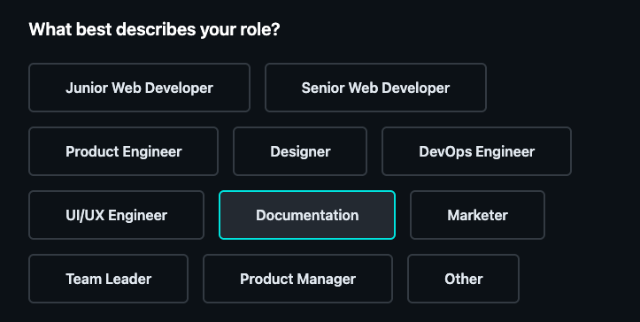
「How did you hear about us?」(どこでNetlifyを知りましたか?) を選びます。
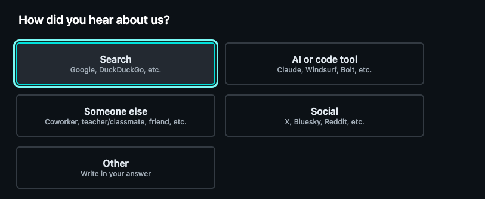
「What is the name of your team?」 で、チーム名を入力します。 個人利用の場合は 自分の名前やプロジェクト名 を入れるのが一般的です。
チーム名はURLの一部などに使われることがあるため、シンプルでわかりやすい名前にしておくのがおすすめです。
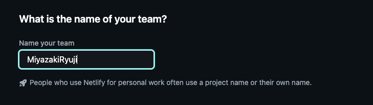
いよいよ実際のサイト公開へ。ファイルをドラッグ&ドロップするだけでデプロイできます。デプロイ後に 公開設定（Public / Private） を確認するところまでがこの章です。
質問への回答が完了したら、画面下部に 「Continue to deploy」 ボタンが現れます。 これをクリックすると、いよいよデプロイ画面へ進みます。
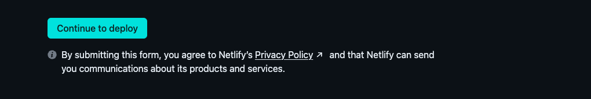
「Deploy your first project.」 の画面で、デプロイ方法を3パターンから選択できます。
Claude Agent等を使い、プロンプトから自動でサイト生成。
GitHub / GitLab / Bitbucket / Azure DevOps から既存リポジトリを連携。
HTML/CSSの完成ファイルをドラッグ&ドロップ。今回はこの方法を使います。
この画面はアカウント作成直後の1回だけ出ます。2つめ以降のサイトは、ログイン後の Projects 画面の下にあるドロップ枠（次のステップ）か、Netlify Drop のページから同じようにアップロードできます。
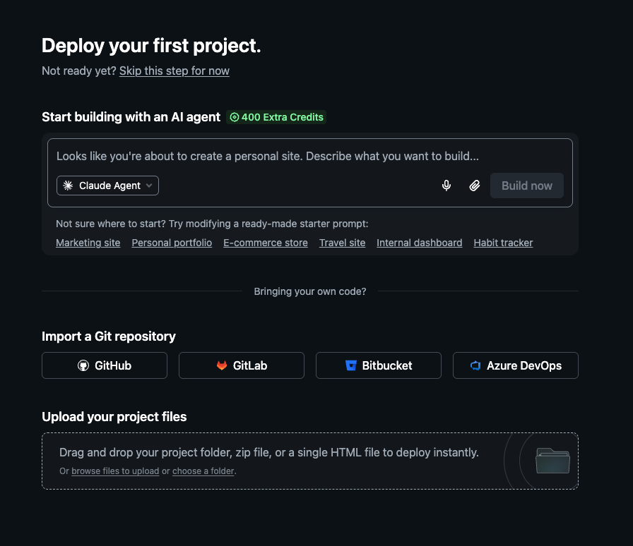
「Drag and drop your project folder, zip file, or a single HTML file to deploy instantly.」 と書かれた枠に、
プロジェクトフォルダ・ZIP・単一HTMLファイルをドラッグ&ドロップします。
browse files to upload（ファイルを選ぶ）／ choose a folder（フォルダを選ぶ）からも選択できます。
index.html をエントリーポイントとして含むフォルダ、もしくはZIPがあればOKです。HTMLファイル1枚だけでも公開できます。
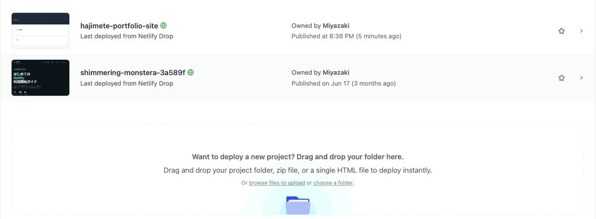
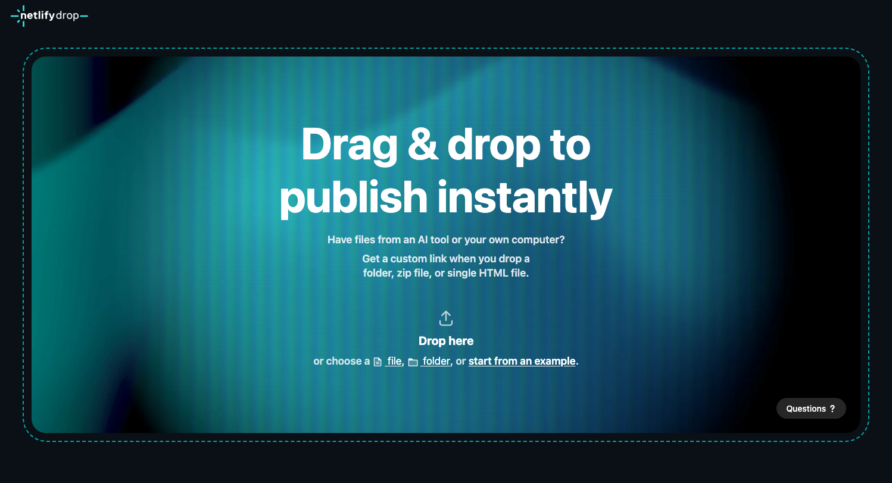
アップロードしたファイル名が index.html でない場合、
「Rename to index.html?」 のダイアログが表示されます。
「Rename and deploy」 を選ぶと、自動でリネームしてデプロイされます。
最初から index.html という名前なら、この確認は出ません。
Webサイトのトップページは index.html である必要があります。これがないと「Page Not Found」エラーになります。
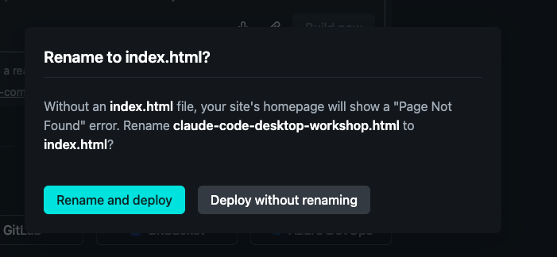
アップロードが完了すると、自動的に プロジェクト画面（Project overview） に切り替わります。
ランダムなプロジェクト名(例: charming-seahorse-0269da)で公開され、
名前の横に Public または Private のラベルが付いています。
緑の文字のURL（xxxx.netlify.app）があなたのサイトのアドレスです。
名前の横のラベルが Private になっていたら、まだ本人以外は見られません。次のステップで Public に切り替えます。
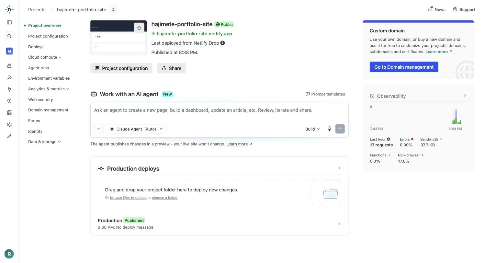
2026年7月末から、新しく作ったアカウント（チーム）ではプロジェクトが「Private（非公開）」で作られる ようになりました。 Private のままだと、URLを送っても相手には「This site is private」という画面しか出ません。 ポートフォリオとして人に見せるには Public に切り替えます。
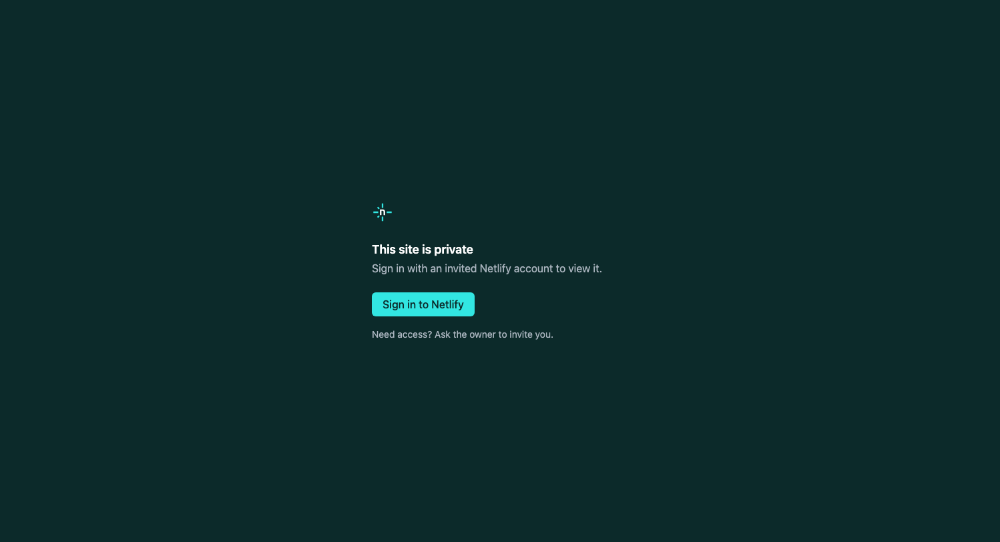
プロジェクト画面の左メニュー、または名前の下の 「Project configuration」 ボタン。
「Production visibility」が Private なら、「Edit visibility」 を押します。
「Visibility」で Public（Anyone can visit your project）を選び、「Save」。表示が Public に変わればOK。
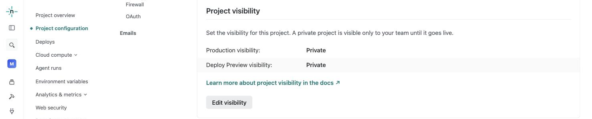
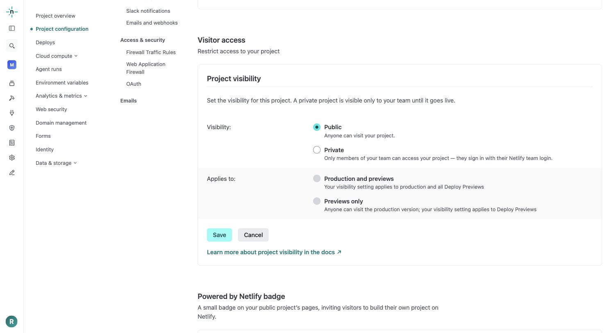
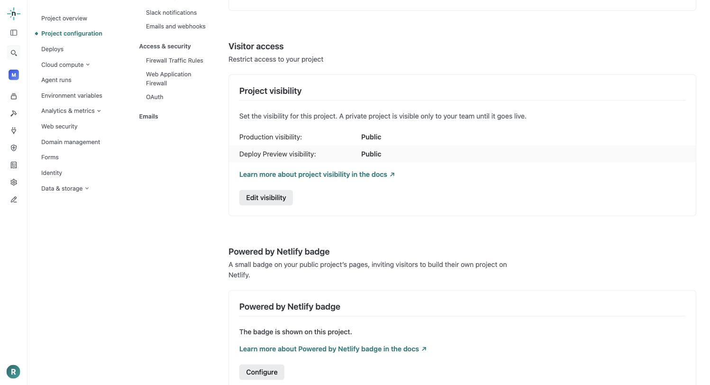
左メニューの Team settings → General → Visitor access → Default project visibility を Public にすると、以後作るプロジェクトは最初から Public になります。
プロジェクト名やドメイン、画面右下に出るバッジを整えて、シェアしやすいサイトに仕上げます。
Project configuration → General → Project details にある 「Change project name」 を押します。 プロジェクト名はそのままURLになるので、覚えやすい名前にしましょう。
英数字と単一のハイフン(-)のみ使用可。最大37文字です。世界中で早い者勝ちなので、「Project name is not available」と出たら別の名前にします。「Project name is available」と出れば「Save」で確定です。
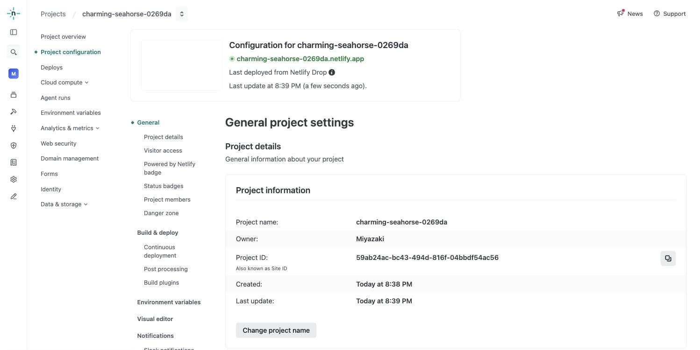
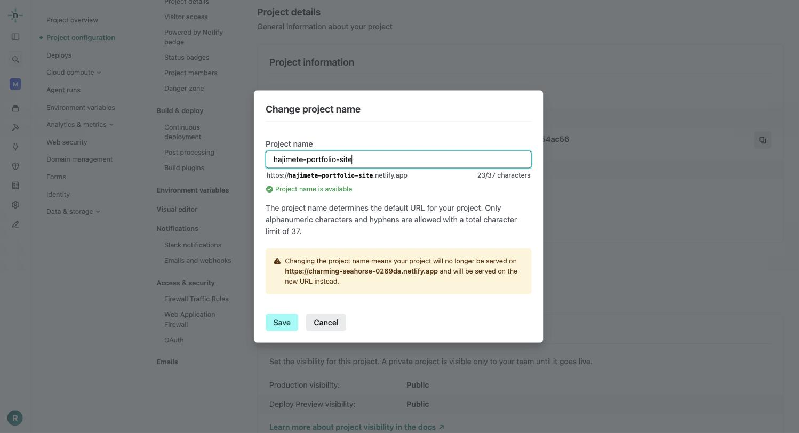
2026年8月から、無料プランで新しく作った公開サイトには、画面右下に 「Powered by Netlify」 という小さなバッジが表示されます。 そのままでも問題ありませんが、消したいときは Project configuration → General → Powered by Netlify badge → 「Configure」 を開き、 「Show the badge on this project」のチェックを外して「Save」 します。
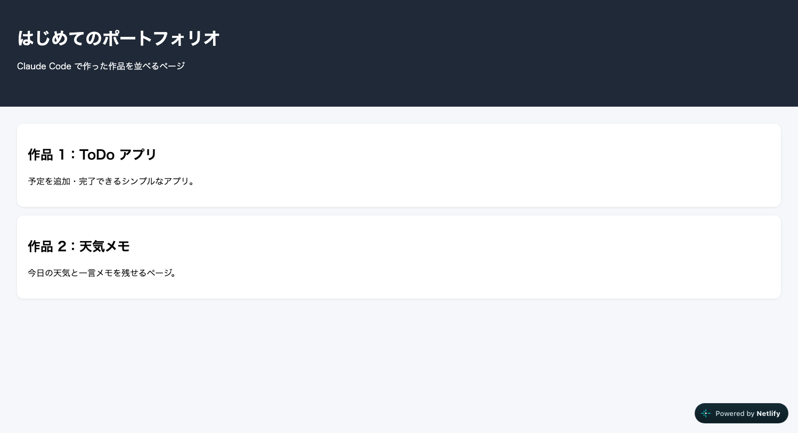
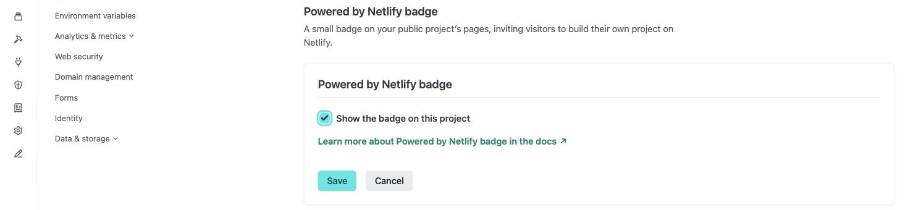
プロジェクト画面右上の 「Go to Domain management」、または左メニューの Domain management を開きます。 必要なければスキップでOKです。
独自ドメイン(例: example.com)を接続できます。
所有しているドメインを追加、または新規購入も可能。xxxx.netlify.app のURLはそのまま使えます。
サイト全体をパスワードで守る機能は、現在は有料の Pro プラン限定です（Visitor access の中にあります）。無料プランで限定共有したいときは Private のままにして、見せたい相手をチームに招待します。
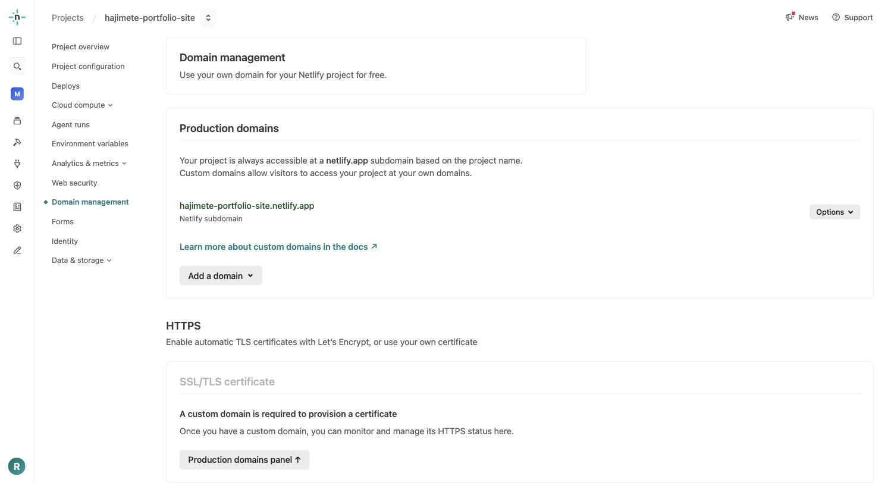
左メニューの Projects を開くと、作ったサイトが サムネイル付きの一覧 に並びます。 名前の横の地球アイコン（🌐）が Public、鍵アイコンなら Private です。 一覧の下のドロップ枠に次のファイルを置けば、2つめのサイトもすぐ作れます。
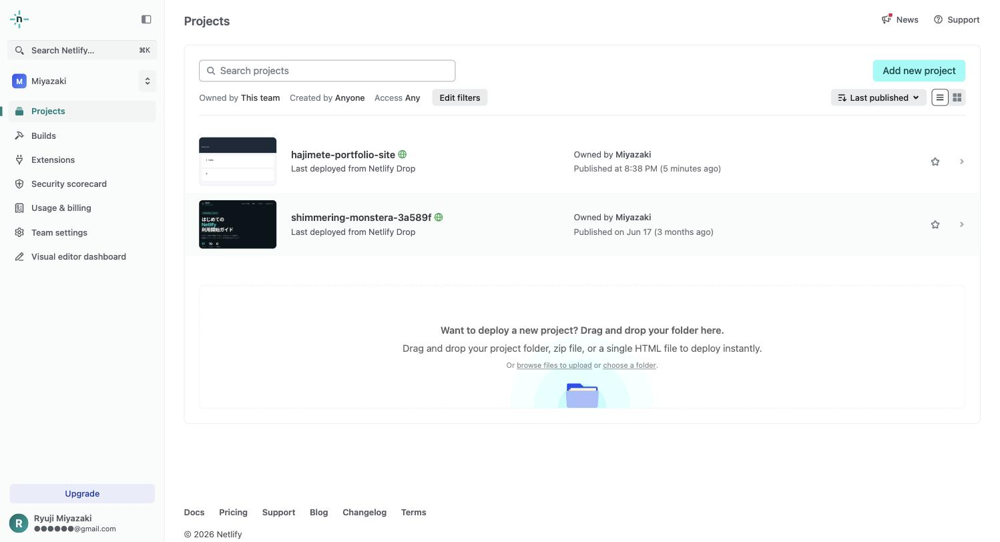
あなたはもう Netlify で自由にサイトを公開できます。次のステップとして、独自ドメイン接続や Git 連携にもチャレンジしてみてください。